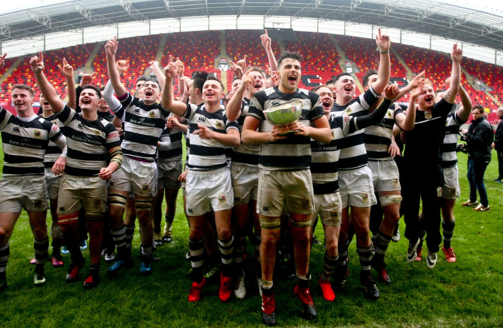

Cork Con
View Cork Con Website
I began playing rugby at a young age with Cork Con. Cork Con is a respected club with a great reputation that has produced some of the greatest talents in world rugby such as Ronan O'Gara and Peter O'Mahony.
The club was founded by staff of the Cork Constitution newspaper. The club is located in Temple Hill, Ballintemple. Cork Con won the All Ireland League and the AIB Cup in their inaugural years 1991 & 2006. During my time at Con we competed in many tournaments and
were very successful. We took many trips to parts of Ireland and had a great relationship with Terenure in Dublin. We also had a tour to Arezzo, Italy when in the under 13 group. We stayed here for a week and played some great teams. It was a great experience. We got to visit cities like Rome and saw some amazing sights.
At the end of that age group players were heading for secondary school. Unfortunately most players were heading to schools that had rugby teams and so the sie of the Cork Con team shrunk. Some players had been together for six years and so it was quite sad.

PBC Rugby
View Pres Website
Once I began secondary school I stopped playing for Cork Con and began playing with Pres. The college sport is rugby union. As of 2017, the college has won 29 Senior Schools Cups and 29 Junior Schools Cups respectively, and has produced 22 Irish Rugby Internationals. In 2007, the school won both the Senior Schools Cup and the Junior Schools Cup (the first time they had won both in the same year since 1995, when Ronan O'Gara was the Senior Captain). Six players have played for the Lions - Tom Kiernan (1962 & Captain in 1968 ), Jerry Walsh (1966), Michael Kiernan (1983), Ronan O'Gara (2001, 2005 & 2009), Simon Zebo (2013) and Peter O'Mahony (2017). I enjoyed playing with Pres and we did well in our first competition in second year, McCarthy Cup. Unfortunately towards the end of the season I broke my leg in four places and was unable to play sport for nine months. In third year I managed to get back into the team and we went all the way to win the Junior Cup. In fourth year I played in the Bowen Shield before breaking my other leg. This time I required metal plating in my leg and so was unable to return to playing rugby. 